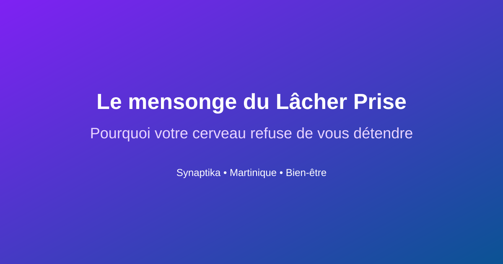

En bref: Vous n'arrivez pas à lâcher prise? C'est normal. Votre cerveau primitif ne répond pas uniquement aux affirmations positives. Il a besoin de signaux PHYSIQUES de sécurité. Découvrez comment contourner ce blocage en 2 minutes chrono.
Sommaire
- 1. Le mensonge du "Lâcher Prise"
- 2. Pourquoi votre cerveau refuse de vous détendre
- 3. Le secret: la sécurité somatique
- 4. Le Protocole "Sécurité Somatique": 3 signaux
- 5. Reset Express: 2 minutes chrono
- 6. Les 3 erreurs qui sabotent votre détente
- 7. L'honnêteté: ce que ça ne fera pas
- 8. FAQ: Vos questions sur le lâcher prise
🎭 Le mensonge
Vous fermez les yeux. Vous vous répétez "je dois lâcher prise". Vous imaginez une plage. Et pourtant, vos trapèzes sont toujours en béton. Bienvenue dans le club. Vous n'êtes pas nul. Vous êtes juste tombé dans une croyance très répandue: celle qui dit que la détente est une décision.
Pourquoi votre cerveau refuse de vous détendre
Sur les réseaux, on retrouve souvent: "Il faut lâcher prise. C'est dans la tête." Le problème? Votre cerveau primitif ne répond pas aux affirmations positives. Il a besoin de signaux physiques concrets.
Quand vous êtes en mode survie, votre cerveau fonctionne comme un gardien de sécurité paranoïaque. Et ce gardien ne parle pas le langage des mots. Il parle le langage du corps.
La vérité: vous ne pouvez pas décider de lâcher prise. Vous pouvez seulement créer les conditions pour que votre corps décide, lui, de lâcher prise.
Le secret: la sécurité somatique
Les neurosciences montrent que le cerveau répond aux signaux de sécurité physique pour autoriser la détente. Pas mental. Physique. Si le corps se détend, le cerveau comprend qu'il peut baisser la garde.
C'est l'inverse de ce qu'on vous a appris. On vous a dit: "Détendez votre esprit, et votre corps suivra." La réalité: "Détendez votre corps, et votre esprit suivra."
🛠️ Le Protocole "Sécurité Somatique": 3 signaux
👁️ Signal 1: Le signal oculaire (30 secondes)
Asseyez-vous confortablement. Sans bouger la tête, promenez lentement votre regard. Observez les détails: textures, couleurs, ombres. Ce mouvement active le système nerveux parasympathique (détente).
✋ Signal 2: Le contact fascial (1 minute)
Une main sur le sternum (centre de la poitrine). L'autre main sur le bas-ventre. Appliquez une pression douce mais ferme. Respirez normalement. Ce double contact crée un "point d'ancrage" de sécurité.
🔄 Signal 3: La micro-oscillation (1-2 minutes)
Debout, pieds écartés. Laissez vos genoux se déverrouiller légèrement. Oscillez doucement d'avant en arrière, puis de gauche à droite. Ce mouvement réinitialise le tonus musculaire et libère les tensions (comme un animal qui tremble après un danger).
⚡ Reset Express: 2 minutes chrono
- Minute 1: Signal oculaire (30s) + Contact fascial (30s)
- Minute 2: Micro-oscillation (1 min)
Quand l'utiliser: Avant une réunion stressante, après une journée chargée, ou le soir pour mieux dormir.
❌ Les 3 erreurs qui sabotent votre détente
- Vouloir forcer le relâchement: Plus vous essayez, plus vous créez de tension.
- Ignorer les signaux du corps: Tension dans les épaules, mâchoire crispée. Scannez votre corps plusieurs fois par jour.
- Confondre relaxation et anesthésie: Scrolling, alcool, sucre... Ce n'est pas de la détente, c'est de l'anesthésie.
L'honnêteté: ce que ça ne fera pas
Cette pratique ne règlera pas vos problèmes financiers ni ne fera disparaître votre charge mentale. Mais elle sortira votre corps du mode urgence, permettant à votre cerveau de passer du mode "survie" au mode "fonctionnement optimal". La détente n'est pas un luxe. C'est un prérequis.
❓ FAQ
Combien de temps pour sentir les effets?
Beaucoup ressentent un relâchement dès les premières minutes. Une pratique régulière sur plusieurs semaines est recommandée pour l'intégrer.
Je n'ai pas 2 minutes, que faire?
Faites juste le signal oculaire (30 secondes). C'est le minimum viable pour envoyer un signal de sécurité.
Est-ce que ça remplace une thérapie?
Non. C'est un outil de régulation du système nerveux. En cas de stress chronique ou burn-out, consultez un professionnel de santé.
Réserver une séance pour travailler sur vos blocages
Vous avez aimé cet article ? Partagez-le avec quelqu'un qui pourrait en avoir besoin.